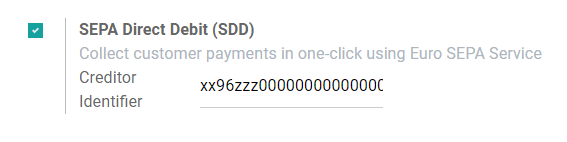

Pagos por lotes: domiciliación bancaria SEPA (SDD)¶
La Zona única de pagos en euros (SEPA, por sus siglas en inglés) es una iniciativa de integración de pago de parte de la Unión Europea para simplificar las transferencias bancarias que se realizan con euros. Con la domiciliación bancaria SEPA (SDD, por sus siglas en inglés) sus clientes pueden firmar un mandato que le autoriza colectar los pagos futuros desde sus cuentas bancarias. Esto es muy útil para pagos recurrentes basados en suscripciones.
Puede registrar los mandatos de los clientes en Odoo y generar archivos .xml que contengan pagos pendientes que se hagan con el mandato SDD.
Nota
Configuración¶
Vaya a , active la domiciliación bancaria SEPA (SDD, por sus siglas en inglés) y haga clic en Guardar. Ingrese el identificador de acreedor de su empresa, este es un número que le brindó su institución bancaria, o la autoridad responsable de entregar este número.
Mandatos de adeudos directos SEPA¶
Crear un mandato¶
El mandato de SDD es el documento que sus clientes firman para que usted pueda recolectar dinero directamente de sus cuentas bancarias.
Para crear un mandato nuevo vaya a y llene el formulario que se encuentra en Crear. Para exportar el archivo PDF haga clic en Imprimir y ya solo necesita que su cliente firme este documento. Una vez que lo haya hecho, suba el documento firmado y haga clic en Validar para empezar a ejecutar el mandato.
Importante
Asegúrese de que los datos de cuentas bancarias IBAN que se registraron en el formulario de contacto del deudor sean correctos, tanto en la pestaña Contabilidad y en sus ajustes de Cuenta bancaria.
Domiciliación bancaria SEPA como método de pago¶
La domiciliación bancaria SEPA se puede usar como método de pago en Comercio electrónico o en el Portal del cliente, solo tiene que activar la SDD como método de pago. De esta forma, sus clientes podrán crear y firmar sus mandatos ellos mismos.
Para hacerlo vaya a , haga clic en Domiciliación bancaria SEPA y realice la configuración de acuerdo a sus necesidades. Para hacerlo vaya a y haga clic en Domiciliación bancaria SEPA.
Importante
Asegúrese de cambiar el campo Estado a Activado y después active la Firma electrónica, necesaria para que los clientes puedan firmar sus mandatos.
A los clientes que utilizan el SDD como método de pago se les pide que añadan su IBAN, su dirección de correo electrónico y que firmen su mandato de adeudo directo SEPA.
Cerrar o revocar un mandato.¶
Los mandatos de domiciliación bancaria se cierran de manera automática cuando llega su Fecha de finalización. Si deja este campo en blanco, el mandato seguirá Activo hasta que se Cierre o Revoque.
Si hace clic en Cerrar la fecha de finalización del mandato cambiará a la fecha de hoy. Esto significa que las facturas con fecha posterior a hoy no se procesarán con un pago SDD.
Si hace clic en Revocar el mandato se deshabilitará de inmediato. Ya no podrá registrar pagos de SDD, sin importar la fecha de la factura. Sin embargo, los pagos que ya se registraron todavía incluirán en el siguiente archivo .xml de SDD.
Advertencia
Una vez que el mandato se haya cerrado o revocado ya no se podrá volver a activar.
Reciba pagos por lote mediante la domiciliación bancaria SEPA¶
Facturas de cliente¶
Puede registrar los pagos por SDD para las facturas emitidas a clientes que cuenten con un mandato SDD activo.
Para hacerlo, abra la factura, haga clic en Registrar pago y elija Domiciliación bancaria SEPA como su método de pago.
Generar archivos .XML de domiciliación bancaria SEPA para adjuntar pagos¶
Los archivos .xml que incluyen todas las instrucciones de pago SDD se pueden subir a su interfaz de banca en línea para que se puedan procesar todos los pagos al mismo tiempo.
Nota
Los archivos que Odoo generan siguen las especificaciones de domiciliación bancaria SEPA PAIN.008.001.02, como lo requieren las reglas de implementación, de esta forma nos aseguramos de que sea compatible con otros bancos.
Para generar un archivo .xml de varios pagos pendientes SDD, puede crear un pago por lotes. Para hacerlo, vaya a , seleccione los pagos que se necesitan, después haga clic en y después en . Una vez que haga clic en , el archivo .xml estará disponible para descargar de manera inmediata.
Por último, suba este archivo a su interfaz bancaria en linea para procesar los pagos.
Truco
Puede recuperar todos los archivos SDD .xml que se generaron en .